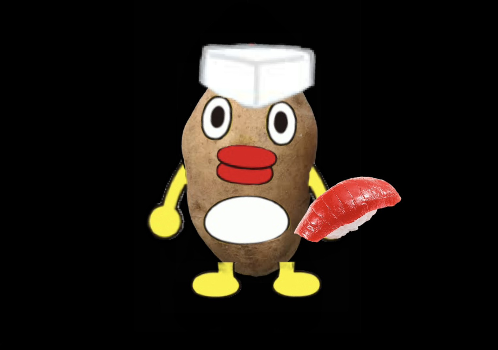

とよシローなにシロークイズ！！
このクイズは様々な格好をしたとよシローが〇〇シローかを考えるクイズだよ！
＜ルール説明＞
回答は”とよシロー”みたいに
シローはカタカナ、それ以外はひらがな
にしてね!
今回は△なしの〇か✕かで点数をつけるからクレームはやめてね!
例題
これはなにシロー？

回答 すシロー
この問題は簡単だったね！すし職人の格好をしたとよシロー、つまり「すシロー」です。
こんな感じの問題を10問用意したから全問正解目指して頑張ろう!
クイズを始める